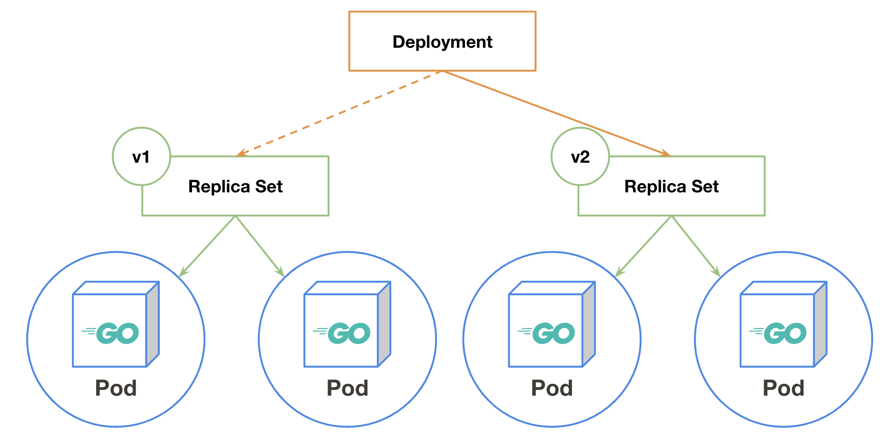
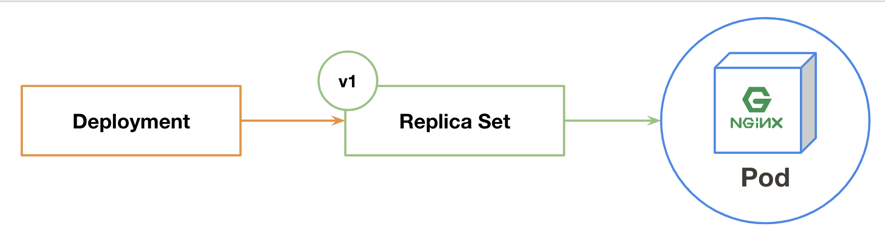
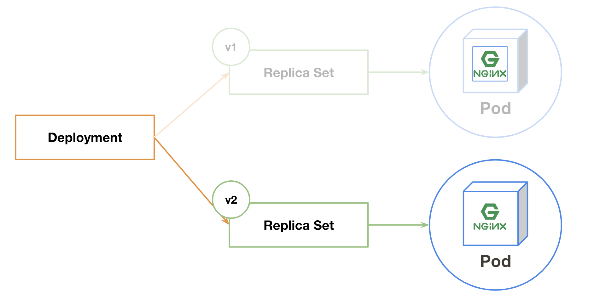

Deployment

Deploymentとは¶
デプロイのためのObjectsです。
ReplicaSetの世代管理を司ります。
一旦、ここまでの登場人物たちをまとめてみましょう。
- Pod
- 1つ以上のコンテナを実行する環境
- ReplicaSet
- Podを指定した台数分維持する
- Deployment
- ReplicaSetの世代管理
実際に動かしてみる¶
ここでは nginx:1.16 イメージを起動し、 nginx:1.17 へアップデートを行ってみましょう
Deploymentでコンテナを動かす¶
まずはDeploymentを作成します。
$ kubectl create deployment mynginx --image nginx:1.16 deployment.apps/mynginx created
作成されたObjectsを見てみましょう。
$ kubectl get deployment,replicaset,pod NAME DESIRED CURRENT UP-TO-DATE AVAILABLE AGE deployment.extensions/mynginx 1 1 1 1 37s NAME DESIRED CURRENT READY AGE replicaset.extensions/mynginx-5559c9b58 1 1 1 38s NAME READY STATUS RESTARTS AGE pod/mynginx-5559c9b58-rzrcc 1/1 Running 0 38s
現在は以下の図のような状態になっています。
DeploymentがReplicaSetを管理し、ReplicaSetがPodを管理しています。

バージョンアップ¶

ここでは nginx:1.16 イメージを起動し、 nginx:1.17 へアップデートを行ってみましょう
まず、現在のdeploymentのイメージが nginx:1.16 であることを確認します。
$ kubectl get deploy mynginx -o yaml | grep "image:" - image: nginx:1.16
確認したDeploymentのイメージを kubectl set コマンドを使用して nginx:1.17 へ変更します
$ kubectl set image deploy mynginx nginx=nginx:1.17 deployment.extensions/mynginx image updated
Podが代替わりしたことと、Deploymentが指定しているイメージを確認しましょう。
$ kubectl get pods NAME READY STATUS RESTARTS AGE mynginx-5559c9b58-rzrcc 1/1 Terminating 0 18m mynginx-84fc57c5f9-6mst8 1/1 Running 0 5s $ kubectl get deploy mynginx -o yaml | grep "image:" - image: nginx:1.17
ロールバックする¶
DeploymentはReplicaSetの世代管理を行っています。
先程 kubectl set で行った更新も1世代として記録されています。確認してみましょう。
$ kubectl rollout history deploy mynginx deployment.extensions/mynginx REVISION CHANGE-CAUSE 1 <none> 2 <none>
2世代存在することが確認できました。
1世代目は kubectl run で新規作成した際に、2世代目は kubectl set でイメージを更新した際のものです。
それぞれのの世代の詳細は以下のように --revision オプションを使うことで確認できます。
$ kubectl rollout history deploy mynginx --revision 1 deployment.extensions/mynginx with revision #1 Pod Template: Labels: app=mynginx pod-template-hash=5559c9b58 Containers: nginx: Image: nginx:1.16 Port: <none> Host Port: <none> Environment: <none> Mounts: <none> Volumes: <none>
$ kubectl rollout history deploy mynginx --revision 2 deployment.extensions/mynginx with revision #2 Pod Template: Labels: app=mynginx pod-template-hash=84fc57c5f9 Containers: nginx: Image: nginx:1.17 Port: <none> Host Port: <none> Environment: <none> Mounts: <none> Volumes: <none>
では、第一世代( nginx:1.17 )から第二世代( nginx:1.16 )へロールバックを行ってみましょう。
kubectl rollout undo コマンドを使用して第一世代へ戻ってみます。
$ kubectl rollout undo deploy mynginx --to-revision 1 deployment.extensions/mynginx
deploymentの状態を確認すると nginx:1.16 になっていますね。
$ kubectl get deploy mynginx -o yaml | grep "image:" - image: nginx:1.16
kubectl rollout history を確認すると第一世代が消えて第三世代になっています。
$ kubectl rollout history deploy mynginx deployment.extensions/mynginx REVISION CHANGE-CAUSE 2 <none> 3 <none>
第一世代と同じく nginx:1.16 が使用されていることが確認できます。
$ kubectl rollout history deploy mynginx --revision 3 deployment.extensions/mynginx with revision #3 Pod Template: Labels: app=mynginx pod-template-hash=5559c9b58 Containers: nginx: Image: nginx:1.16 Port: <none> Host Port: <none> Environment: <none> Mounts: <none> Volumes: <none>
お片付け¶
$ kubectl delete deployment mynginx